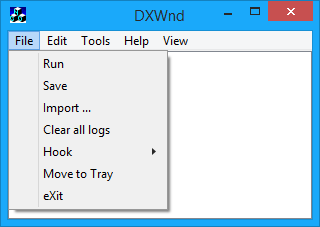

Run |
Starts the currently selected application |
Save |
Saves the current configuration to disk. |
Import... |
Imports one program configuration from an external .dxw exported file. |
Clear all logs |
Turns off all tracing options for all games in the list and deletes any dxwnd.log file. |
Hook |
See Hook. |
Move to Tray |
Move DxWnd to the System Tray, where a dedicated icon will show its state and allow a few commands, including the option to show the application window again. Note that once DxWnd goes in the System Tray, it always stays there even after its window is restored. |
eXit |
Exits DxWnd. Beware that if a game was activated while DxWnd was active, exiting DxWnd while the game is still running will very likely crash the game, so DxWnd will check for this and prompt you to confirm the operation. |